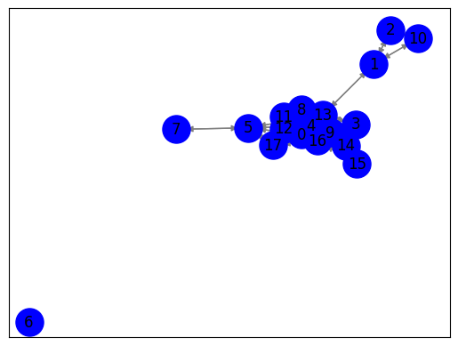

import requests
from bs4 import BeautifulSoup
import csv
def scrape_detik(page):
url = f'https://www.detik.com/search/searchnews?query=pemilu+2024&sortby=time&page={page}'
req = requests.get(url)
sop = BeautifulSoup(req.text, 'html.parser')
li = sop.find('div', class_='list media_rows list-berita')
lin = li.find_all('article')
results = []
for x in lin:
link = x.find('a')['href']
date = x.find('a').find('span', class_='date').text.replace('WIB','').replace('detikNews','').split(',')[1]
headline = x.find('a').find('h2').text
ge_ = requests.get(link).text
sop_ = BeautifulSoup(ge_, 'html.parser')
content = sop_.find('div', class_='detail__body-text itp_bodycontent')
if content is not None:
paragraphs = content.find_all('p')
content_ = ''.join([p.get_text(strip=True) for p in paragraphs])
else:
content_ = ''
results.append({
'link': link,
'date': date,
'headline': headline,
'content': content_
})
return results
# Panggil fungsi untuk scraping semua artikel
all_results = []
for page in range(1, 1112): # scrape 11 pages
page_results = scrape_detik(page)
all_results.extend(page_results)
# Tulis hasil ke file CSV
with open('detik_results.csv', 'w', newline='', encoding='utf-8') as f:
writer = csv.DictWriter(f, fieldnames=['link', 'date', 'headline', 'content'])
writer.writeheader()
writer.writerows(all_results)
# Baca file CSV
with open('detik_results.csv', 'r', newline='', encoding='utf-8') as f:
reader = csv.DictReader(f)
rows = list(reader)
# Tampilkan hasil
print("Search results:")
for i, row in enumerate(rows):
print(f"[{i+1}] {row['headline']}")
print(f" {row['date']}")
print(f" {row['content']}")
---------------------------------------------------------------------------
KeyboardInterrupt Traceback (most recent call last)
<ipython-input-1-5a6803d12f2a> in <cell line: 39>()
38 all_results = []
39 for page in range(1, 1112): # scrape 11 pages
---> 40 page_results = scrape_detik(page)
41 all_results.extend(page_results)
42
<ipython-input-1-5a6803d12f2a> in scrape_detik(page)
16 headline = x.find('a').find('h2').text
17
---> 18 ge_ = requests.get(link).text
19 sop_ = BeautifulSoup(ge_, 'html.parser')
20 content = sop_.find('div', class_='detail__body-text itp_bodycontent')
/usr/local/lib/python3.10/dist-packages/requests/api.py in get(url, params, **kwargs)
71 """
72
---> 73 return request("get", url, params=params, **kwargs)
74
75
/usr/local/lib/python3.10/dist-packages/requests/api.py in request(method, url, **kwargs)
57 # cases, and look like a memory leak in others.
58 with sessions.Session() as session:
---> 59 return session.request(method=method, url=url, **kwargs)
60
61
/usr/local/lib/python3.10/dist-packages/requests/sessions.py in request(self, method, url, params, data, headers, cookies, files, auth, timeout, allow_redirects, proxies, hooks, stream, verify, cert, json)
587 }
588 send_kwargs.update(settings)
--> 589 resp = self.send(prep, **send_kwargs)
590
591 return resp
/usr/local/lib/python3.10/dist-packages/requests/sessions.py in send(self, request, **kwargs)
701
702 # Send the request
--> 703 r = adapter.send(request, **kwargs)
704
705 # Total elapsed time of the request (approximately)
/usr/local/lib/python3.10/dist-packages/requests/adapters.py in send(self, request, stream, timeout, verify, cert, proxies)
484
485 try:
--> 486 resp = conn.urlopen(
487 method=request.method,
488 url=url,
/usr/local/lib/python3.10/dist-packages/urllib3/connectionpool.py in urlopen(self, method, url, body, headers, retries, redirect, assert_same_host, timeout, pool_timeout, release_conn, chunked, body_pos, preload_content, decode_content, **response_kw)
789
790 # Make the request on the HTTPConnection object
--> 791 response = self._make_request(
792 conn,
793 method,
/usr/local/lib/python3.10/dist-packages/urllib3/connectionpool.py in _make_request(self, conn, method, url, body, headers, retries, timeout, chunked, response_conn, preload_content, decode_content, enforce_content_length)
466 # Trigger any extra validation we need to do.
467 try:
--> 468 self._validate_conn(conn)
469 except (SocketTimeout, BaseSSLError) as e:
470 self._raise_timeout(err=e, url=url, timeout_value=conn.timeout)
/usr/local/lib/python3.10/dist-packages/urllib3/connectionpool.py in _validate_conn(self, conn)
1095 # Force connect early to allow us to validate the connection.
1096 if conn.is_closed:
-> 1097 conn.connect()
1098
1099 if not conn.is_verified:
/usr/local/lib/python3.10/dist-packages/urllib3/connection.py in connect(self)
640 )
641
--> 642 sock_and_verified = _ssl_wrap_socket_and_match_hostname(
643 sock=sock,
644 cert_reqs=self.cert_reqs,
/usr/local/lib/python3.10/dist-packages/urllib3/connection.py in _ssl_wrap_socket_and_match_hostname(sock, cert_reqs, ssl_version, ssl_minimum_version, ssl_maximum_version, cert_file, key_file, key_password, ca_certs, ca_cert_dir, ca_cert_data, assert_hostname, assert_fingerprint, server_hostname, ssl_context, tls_in_tls)
781 server_hostname = normalized
782
--> 783 ssl_sock = ssl_wrap_socket(
784 sock=sock,
785 keyfile=key_file,
/usr/local/lib/python3.10/dist-packages/urllib3/util/ssl_.py in ssl_wrap_socket(sock, keyfile, certfile, cert_reqs, ca_certs, server_hostname, ssl_version, ciphers, ssl_context, ca_cert_dir, key_password, ca_cert_data, tls_in_tls)
444 if ca_certs or ca_cert_dir or ca_cert_data:
445 try:
--> 446 context.load_verify_locations(ca_certs, ca_cert_dir, ca_cert_data)
447 except OSError as e:
448 raise SSLError(e) from e
KeyboardInterrupt:
from google.colab import drive
drive.mount('/content/drive')
Drive already mounted at /content/drive; to attempt to forcibly remount, call drive.mount("/content/drive", force_remount=True).
import pandas as pd
data = pd.read_csv('/content/drive/MyDrive/ppw/detik_results.csv')
data
| link | date | headline | content | |
|---|---|---|---|---|
| 0 | https://www.detik.com/jatim/berita/d-7032383/k... | 12 Nov 2023 13:11 | KPU Bondowoso Sambut Baik Aksi Stakeholder Pat... | Untuk mendinginkan suasana agar tetap kondusif... |
| 1 | https://www.detik.com/sumut/berita/d-7032359/s... | 12 Nov 2023 13:00 | Spanduk Ganjar Dicopot di Siantar, Sandiaga Bi... | Ketua Dewan Pakar TPN Ganjar-Mahfud, Sandiaga ... |
| 2 | https://news.detik.com/pemilu/d-7032377/gibran... | 12 Nov 2023 12:57 | Gibran ke Pendukung: Kalau Banyak Fitnah dan N... | Bakal cawapresGibran Rakabuming Rakakembali me... |
| 3 | https://news.detik.com/pemilu/d-7032360/anies-... | 12 Nov 2023 12:35 | Anies Yakin Menang Pilpres Satu Putaran | Bakal calon presiden (bacapres) Koalisi Peruba... |
| 4 | https://www.detik.com/jogja/berita/d-7032354/k... | 12 Nov 2023 12:28 | Klaim Anies Baswedan Didukung PPP, Sandiaga Un... | Bacapres Koalisi Perubahan, Anies Baswedan, me... |
| ... | ... | ... | ... | ... |
| 9967 | https://news.detik.com/pemilu/d-6754534/pdip-u... | 04 Jun 2023 15:28 | PDIP Ungkap PAN Sodorkan Nama Erick Thohir Jad... | SekjenPDIPHasto Kristiyanto mengungkap isi per... |
| 9968 | https://news.detik.com/detiktv/d-6754525/pdip-... | 04 Jun 2023 15:25 | PDIP: Jokowi Cawe-cawe untuk Kemajuan Indonesi... | NaN |
| 9969 | https://news.detik.com/detiktv/d-6754521/pantu... | 04 Jun 2023 15:20 | Pantun Hasto: Jokowi-Ganjar Sehati, Kesatupadu... | NaN |
| 9970 | https://www.detik.com/jatim/berita/d-6754489/s... | 04 Jun 2023 14:54 | Survei Capres SRS: Prabowo Ungguli Ganjar-Anie... | Lembaga survei Surabaya Research Syndicate (SR... |
| 9971 | https://news.detik.com/pemilu/d-6754458/survei... | 04 Jun 2023 14:35 | Survei Simulasi 3 Capres Indikator: Prabowo 38... | Lembaga surveiIndikator Politik Indonesiameril... |
9972 rows × 4 columns
#install library
!pip install sastrawi
!pip install swifter
!pip install gensim
Requirement already satisfied: sastrawi in /usr/local/lib/python3.10/dist-packages (1.0.1)
Requirement already satisfied: swifter in /usr/local/lib/python3.10/dist-packages (1.4.0)
Requirement already satisfied: pandas>=1.0.0 in /usr/local/lib/python3.10/dist-packages (from swifter) (1.5.3)
Requirement already satisfied: psutil>=5.6.6 in /usr/local/lib/python3.10/dist-packages (from swifter) (5.9.5)
Requirement already satisfied: dask[dataframe]>=2.10.0 in /usr/local/lib/python3.10/dist-packages (from swifter) (2023.8.1)
Requirement already satisfied: tqdm>=4.33.0 in /usr/local/lib/python3.10/dist-packages (from swifter) (4.66.1)
Requirement already satisfied: click>=8.0 in /usr/local/lib/python3.10/dist-packages (from dask[dataframe]>=2.10.0->swifter) (8.1.7)
Requirement already satisfied: cloudpickle>=1.5.0 in /usr/local/lib/python3.10/dist-packages (from dask[dataframe]>=2.10.0->swifter) (2.2.1)
Requirement already satisfied: fsspec>=2021.09.0 in /usr/local/lib/python3.10/dist-packages (from dask[dataframe]>=2.10.0->swifter) (2023.6.0)
Requirement already satisfied: packaging>=20.0 in /usr/local/lib/python3.10/dist-packages (from dask[dataframe]>=2.10.0->swifter) (23.2)
Requirement already satisfied: partd>=1.2.0 in /usr/local/lib/python3.10/dist-packages (from dask[dataframe]>=2.10.0->swifter) (1.4.1)
Requirement already satisfied: pyyaml>=5.3.1 in /usr/local/lib/python3.10/dist-packages (from dask[dataframe]>=2.10.0->swifter) (6.0.1)
Requirement already satisfied: toolz>=0.10.0 in /usr/local/lib/python3.10/dist-packages (from dask[dataframe]>=2.10.0->swifter) (0.12.0)
Requirement already satisfied: importlib-metadata>=4.13.0 in /usr/local/lib/python3.10/dist-packages (from dask[dataframe]>=2.10.0->swifter) (6.8.0)
Requirement already satisfied: python-dateutil>=2.8.1 in /usr/local/lib/python3.10/dist-packages (from pandas>=1.0.0->swifter) (2.8.2)
Requirement already satisfied: pytz>=2020.1 in /usr/local/lib/python3.10/dist-packages (from pandas>=1.0.0->swifter) (2023.3.post1)
Requirement already satisfied: numpy>=1.21.0 in /usr/local/lib/python3.10/dist-packages (from pandas>=1.0.0->swifter) (1.23.5)
Requirement already satisfied: zipp>=0.5 in /usr/local/lib/python3.10/dist-packages (from importlib-metadata>=4.13.0->dask[dataframe]>=2.10.0->swifter) (3.17.0)
Requirement already satisfied: locket in /usr/local/lib/python3.10/dist-packages (from partd>=1.2.0->dask[dataframe]>=2.10.0->swifter) (1.0.0)
Requirement already satisfied: six>=1.5 in /usr/local/lib/python3.10/dist-packages (from python-dateutil>=2.8.1->pandas>=1.0.0->swifter) (1.16.0)
Requirement already satisfied: gensim in /usr/local/lib/python3.10/dist-packages (4.3.2)
Requirement already satisfied: numpy>=1.18.5 in /usr/local/lib/python3.10/dist-packages (from gensim) (1.23.5)
Requirement already satisfied: scipy>=1.7.0 in /usr/local/lib/python3.10/dist-packages (from gensim) (1.11.3)
Requirement already satisfied: smart-open>=1.8.1 in /usr/local/lib/python3.10/dist-packages (from gensim) (6.4.0)
# Impor pustaka spaCy
import spacy
import nltk
# Memuat model bahasa Inggris spaCy
nlp = spacy.load("en_core_web_sm")
# Berikan berita yang ingin diringkas
berita = data['content'].iloc[600]
# Analisis teks menggunakan spaCy
doc = nlp(berita)
# Meringkas teks dengan mengekstrak kalimat-kalimat utama
kalimat_utama = [kalimat.text for kalimat in doc.sents]
ringkasan = " ".join(kalimat_utama[:9971]) # Mengambil dua kalimat pertama sebagai ringkasan
# Cetak ringkasan
print(ringkasan)
Bacawapres Gibran Rakabuming Rakabertemu dengan Anies Baswedan dan Muhaimin Iskandar (Cak Imin) di acara Haul Al Habib Ali bin Muhammad Al Habsyi di Masjid Riyadh, Solo. Keduanya sempat ngobrol sejenak. "Ngobrol sedikit. Nggih di dalam. Disamperin saja Pak Anies masih di dalam," tutur Gibran kepada wartawan, Sabtu (4/11/2023)."Ya dikit tadi, masih acara. Terus makan bareng. Udah-udah makasih ya," imbuhnya. ADVERTISEMENTSCROLL TO CONTINUE WITH CONTENTCak Imin juga menyatakan hal serupa. Ia mengatakan Cak Imin dan Gibran saling bertanya kabar. "Iya sempat (ngobrol). Nanya-nanya kabar saja," kata Cak Imin. Pantauandetikcomdi lokasi, Anies-Cak Imin terlihat tiba lebih dulu. Keduanya sampai di lokasi pukul 07.00 WIB.Sementara Gibran, baru tampak menghadiri acara pada pukul 10.30 WIB. Gibran pun datang ditemani oleh sekjen Partai Gerindra, Ahmad Muzani. Mereka pun duduk saling berdekatan. Gibran terlihat duduk di sebelah kanan dari posisi Anies dan Cak Imin. Ketiganya terlihat khusyuk mengikuti acara.
import nltk
nltk.download('punkt')
[nltk_data] Downloading package punkt to /root/nltk_data...
[nltk_data] Package punkt is already up-to-date!
True
TF - IDF#
from sklearn.feature_extraction.text import TfidfVectorizer
kalimat = nltk.sent_tokenize(ringkasan)
tfidf_vectorizer = TfidfVectorizer()
tfidf_matrix = tfidf_vectorizer.fit_transform(kalimat)
terms = tfidf_vectorizer.get_feature_names_out()
for i, sentence in enumerate(kalimat):
print(f"\nKalimat {i+1}: {sentence}")
for j, term in enumerate(terms):
tfidf_value = tfidf_matrix[i, j]
if tfidf_value > 0:
print(f"{term}: {tfidf_value:.4f}")
Kalimat 1: Bacawapres Gibran Rakabuming Rakabertemu dengan Anies Baswedan dan Muhaimin Iskandar (Cak Imin) di acara Haul Al Habib Ali bin Muhammad Al Habsyi di Masjid Riyadh, Solo.
acara: 0.1448
al: 0.4033
ali: 0.2016
anies: 0.1448
bacawapres: 0.2016
baswedan: 0.2016
bin: 0.2016
cak: 0.1335
dan: 0.1586
dengan: 0.2016
di: 0.2670
gibran: 0.1239
habib: 0.2016
habsyi: 0.2016
haul: 0.2016
imin: 0.1239
iskandar: 0.2016
masjid: 0.2016
muhaimin: 0.2016
muhammad: 0.2016
rakabertemu: 0.2016
rakabuming: 0.2016
riyadh: 0.2016
solo: 0.2016
Kalimat 2: Keduanya sempat ngobrol sejenak.
keduanya: 0.4931
ngobrol: 0.4432
sejenak: 0.5633
sempat: 0.4931
Kalimat 3: "Ngobrol sedikit.
ngobrol: 0.6184
sedikit: 0.7859
Kalimat 4: Nggih di dalam.
dalam: 0.5895
di: 0.4459
nggih: 0.6735
Kalimat 5: Disamperin saja Pak Anies masih di dalam," tutur Gibran kepada wartawan, Sabtu (4/11/2023).
11: 0.2932
2023: 0.2932
anies: 0.2106
dalam: 0.2567
di: 0.1941
disamperin: 0.2932
gibran: 0.1802
kepada: 0.2932
masih: 0.2567
pak: 0.2932
sabtu: 0.2932
saja: 0.2567
tutur: 0.2932
wartawan: 0.2932
Kalimat 6: "Ya dikit tadi, masih acara.
acara: 0.3570
dikit: 0.4970
masih: 0.4350
tadi: 0.4970
ya: 0.4350
Kalimat 7: Terus makan bareng.
bareng: 0.5774
makan: 0.5774
terus: 0.5774
Kalimat 8: Udah-udah makasih ya," imbuhnya.
imbuhnya: 0.3844
makasih: 0.3844
udah: 0.7689
ya: 0.3365
Kalimat 9: ADVERTISEMENTSCROLL TO CONTINUE WITH CONTENTCak Imin juga menyatakan hal serupa.
advertisementscroll: 0.3265
contentcak: 0.3265
continue: 0.3265
hal: 0.3265
imin: 0.2007
juga: 0.3265
menyatakan: 0.3265
serupa: 0.3265
to: 0.3265
with: 0.3265
Kalimat 10: Ia mengatakan Cak Imin dan Gibran saling bertanya kabar.
bertanya: 0.3970
cak: 0.2628
dan: 0.3123
gibran: 0.2440
ia: 0.3970
imin: 0.2440
kabar: 0.3475
mengatakan: 0.3970
saling: 0.3475
Kalimat 11: "Iya sempat (ngobrol).
iya: 0.6475
ngobrol: 0.5095
sempat: 0.5667
Kalimat 12: Nanya-nanya kabar saja," kata Cak Imin.
cak: 0.2442
imin: 0.2268
kabar: 0.3229
kata: 0.3689
nanya: 0.7378
saja: 0.3229
Kalimat 13: Pantauandetikcomdi lokasi, Anies-Cak Imin terlihat tiba lebih dulu.
anies: 0.2771
cak: 0.2555
dulu: 0.3858
imin: 0.2372
lebih: 0.3858
lokasi: 0.3377
pantauandetikcomdi: 0.3858
terlihat: 0.3036
tiba: 0.3858
Kalimat 14: Keduanya sampai di lokasi pukul 07.00 WIB.Sementara Gibran, baru tampak menghadiri acara pada pukul 10.30 WIB.
00: 0.2189
07: 0.2189
10: 0.2189
30: 0.2189
acara: 0.1572
baru: 0.2189
di: 0.1450
gibran: 0.1346
keduanya: 0.1916
lokasi: 0.1916
menghadiri: 0.2189
pada: 0.2189
pukul: 0.4379
sampai: 0.2189
sementara: 0.2189
tampak: 0.2189
wib: 0.4379
Kalimat 15: Gibran pun datang ditemani oleh sekjen Partai Gerindra, Ahmad Muzani.
ahmad: 0.3307
datang: 0.3307
ditemani: 0.3307
gerindra: 0.3307
gibran: 0.2033
muzani: 0.3307
oleh: 0.3307
partai: 0.3307
pun: 0.2895
sekjen: 0.3307
Kalimat 16: Mereka pun duduk saling berdekatan.
berdekatan: 0.4823
duduk: 0.4222
mereka: 0.4823
pun: 0.4222
saling: 0.4222
Kalimat 17: Gibran terlihat duduk di sebelah kanan dari posisi Anies dan Cak Imin.
anies: 0.2515
cak: 0.2319
dan: 0.2756
dari: 0.3502
di: 0.2319
duduk: 0.3066
gibran: 0.2153
imin: 0.2153
kanan: 0.3502
posisi: 0.3502
sebelah: 0.3502
terlihat: 0.2756
Kalimat 18: Ketiganya terlihat khusyuk mengikuti acara.
acara: 0.3532
ketiganya: 0.4918
khusyuk: 0.4918
mengikuti: 0.4918
terlihat: 0.3869
# kalimat = nltk.sent_tokenize(ringkasan)
# # Gunakan TfidfVectorizer dari scikit-learn
# tfidf_vectorizer = TfidfVectorizer()
# tfidf_matrix = tfidf_vectorizer.fit_transform(kalimat)
# terms = tfidf_vectorizer.get_feature_names_out()
# # Untuk output, jika terlalu besar, mungkin sebaiknya dihindari untuk mencetak semua nilai TF-IDF.
# # Sebagai gantinya, kamu dapat membatasi pencetakan untuk sebagian kecil dari nilai tfidf_matrix.
# n_kalimat = min(len(kalimat), 977) # Ambil 977 kalimat atau kurang
# n_terms = 20 # Ambil 20 kata kunci dengan nilai TF-IDF tertinggi
# for i in range(n_kalimat):
# print(f"\nKalimat {i+1}: {kalimat[i]}")
# tfidf_scores = [(term, tfidf_matrix[i, j]) for j, term in enumerate(terms)]
# tfidf_scores = sorted(tfidf_scores, key=lambda x: x[1], reverse=True)[:n_terms]
# for term, score in tfidf_scores:
# print(f"{term}: {score:.4f}")
Cosine Similarit#
from sklearn.metrics.pairwise import cosine_similarity
import networkx as nx
import matplotlib.pyplot as plt
cosine_similarities = cosine_similarity(tfidf_matrix, tfidf_matrix)
for i in range(len(kalimat)):
for j in range(i+1, len(kalimat)):
similarity = cosine_similarities[i][j]
print(f"Similarity Kalimat {i+1} dan Kalimat {j+1}: {similarity:.4f}")
Similarity Kalimat 1 dan Kalimat 2: 0.0000
Similarity Kalimat 1 dan Kalimat 3: 0.0000
Similarity Kalimat 1 dan Kalimat 4: 0.1191
Similarity Kalimat 1 dan Kalimat 5: 0.1047
Similarity Kalimat 1 dan Kalimat 6: 0.0517
Similarity Kalimat 1 dan Kalimat 7: 0.0000
Similarity Kalimat 1 dan Kalimat 8: 0.0000
Similarity Kalimat 1 dan Kalimat 9: 0.0249
Similarity Kalimat 1 dan Kalimat 10: 0.1451
Similarity Kalimat 1 dan Kalimat 11: 0.0000
Similarity Kalimat 1 dan Kalimat 12: 0.0607
Similarity Kalimat 1 dan Kalimat 13: 0.1036
Similarity Kalimat 1 dan Kalimat 14: 0.0781
Similarity Kalimat 1 dan Kalimat 15: 0.0252
Similarity Kalimat 1 dan Kalimat 16: 0.0000
Similarity Kalimat 1 dan Kalimat 17: 0.2264
Similarity Kalimat 1 dan Kalimat 18: 0.0511
Similarity Kalimat 2 dan Kalimat 3: 0.2741
Similarity Kalimat 2 dan Kalimat 4: 0.0000
Similarity Kalimat 2 dan Kalimat 5: 0.0000
Similarity Kalimat 2 dan Kalimat 6: 0.0000
Similarity Kalimat 2 dan Kalimat 7: 0.0000
Similarity Kalimat 2 dan Kalimat 8: 0.0000
Similarity Kalimat 2 dan Kalimat 9: 0.0000
Similarity Kalimat 2 dan Kalimat 10: 0.0000
Similarity Kalimat 2 dan Kalimat 11: 0.5052
Similarity Kalimat 2 dan Kalimat 12: 0.0000
Similarity Kalimat 2 dan Kalimat 13: 0.0000
Similarity Kalimat 2 dan Kalimat 14: 0.0945
Similarity Kalimat 2 dan Kalimat 15: 0.0000
Similarity Kalimat 2 dan Kalimat 16: 0.0000
Similarity Kalimat 2 dan Kalimat 17: 0.0000
Similarity Kalimat 2 dan Kalimat 18: 0.0000
Similarity Kalimat 3 dan Kalimat 4: 0.0000
Similarity Kalimat 3 dan Kalimat 5: 0.0000
Similarity Kalimat 3 dan Kalimat 6: 0.0000
Similarity Kalimat 3 dan Kalimat 7: 0.0000
Similarity Kalimat 3 dan Kalimat 8: 0.0000
Similarity Kalimat 3 dan Kalimat 9: 0.0000
Similarity Kalimat 3 dan Kalimat 10: 0.0000
Similarity Kalimat 3 dan Kalimat 11: 0.3150
Similarity Kalimat 3 dan Kalimat 12: 0.0000
Similarity Kalimat 3 dan Kalimat 13: 0.0000
Similarity Kalimat 3 dan Kalimat 14: 0.0000
Similarity Kalimat 3 dan Kalimat 15: 0.0000
Similarity Kalimat 3 dan Kalimat 16: 0.0000
Similarity Kalimat 3 dan Kalimat 17: 0.0000
Similarity Kalimat 3 dan Kalimat 18: 0.0000
Similarity Kalimat 4 dan Kalimat 5: 0.2379
Similarity Kalimat 4 dan Kalimat 6: 0.0000
Similarity Kalimat 4 dan Kalimat 7: 0.0000
Similarity Kalimat 4 dan Kalimat 8: 0.0000
Similarity Kalimat 4 dan Kalimat 9: 0.0000
Similarity Kalimat 4 dan Kalimat 10: 0.0000
Similarity Kalimat 4 dan Kalimat 11: 0.0000
Similarity Kalimat 4 dan Kalimat 12: 0.0000
Similarity Kalimat 4 dan Kalimat 13: 0.0000
Similarity Kalimat 4 dan Kalimat 14: 0.0646
Similarity Kalimat 4 dan Kalimat 15: 0.0000
Similarity Kalimat 4 dan Kalimat 16: 0.0000
Similarity Kalimat 4 dan Kalimat 17: 0.1034
Similarity Kalimat 4 dan Kalimat 18: 0.0000
Similarity Kalimat 5 dan Kalimat 6: 0.1117
Similarity Kalimat 5 dan Kalimat 7: 0.0000
Similarity Kalimat 5 dan Kalimat 8: 0.0000
Similarity Kalimat 5 dan Kalimat 9: 0.0000
Similarity Kalimat 5 dan Kalimat 10: 0.0440
Similarity Kalimat 5 dan Kalimat 11: 0.0000
Similarity Kalimat 5 dan Kalimat 12: 0.0829
Similarity Kalimat 5 dan Kalimat 13: 0.0584
Similarity Kalimat 5 dan Kalimat 14: 0.0524
Similarity Kalimat 5 dan Kalimat 15: 0.0366
Similarity Kalimat 5 dan Kalimat 16: 0.0000
Similarity Kalimat 5 dan Kalimat 17: 0.1368
Similarity Kalimat 5 dan Kalimat 18: 0.0000
Similarity Kalimat 6 dan Kalimat 7: 0.0000
Similarity Kalimat 6 dan Kalimat 8: 0.1464
Similarity Kalimat 6 dan Kalimat 9: 0.0000
Similarity Kalimat 6 dan Kalimat 10: 0.0000
Similarity Kalimat 6 dan Kalimat 11: 0.0000
Similarity Kalimat 6 dan Kalimat 12: 0.0000
Similarity Kalimat 6 dan Kalimat 13: 0.0000
Similarity Kalimat 6 dan Kalimat 14: 0.0561
Similarity Kalimat 6 dan Kalimat 15: 0.0000
Similarity Kalimat 6 dan Kalimat 16: 0.0000
Similarity Kalimat 6 dan Kalimat 17: 0.0000
Similarity Kalimat 6 dan Kalimat 18: 0.1261
Similarity Kalimat 7 dan Kalimat 8: 0.0000
Similarity Kalimat 7 dan Kalimat 9: 0.0000
Similarity Kalimat 7 dan Kalimat 10: 0.0000
Similarity Kalimat 7 dan Kalimat 11: 0.0000
Similarity Kalimat 7 dan Kalimat 12: 0.0000
Similarity Kalimat 7 dan Kalimat 13: 0.0000
Similarity Kalimat 7 dan Kalimat 14: 0.0000
Similarity Kalimat 7 dan Kalimat 15: 0.0000
Similarity Kalimat 7 dan Kalimat 16: 0.0000
Similarity Kalimat 7 dan Kalimat 17: 0.0000
Similarity Kalimat 7 dan Kalimat 18: 0.0000
Similarity Kalimat 8 dan Kalimat 9: 0.0000
Similarity Kalimat 8 dan Kalimat 10: 0.0000
Similarity Kalimat 8 dan Kalimat 11: 0.0000
Similarity Kalimat 8 dan Kalimat 12: 0.0000
Similarity Kalimat 8 dan Kalimat 13: 0.0000
Similarity Kalimat 8 dan Kalimat 14: 0.0000
Similarity Kalimat 8 dan Kalimat 15: 0.0000
Similarity Kalimat 8 dan Kalimat 16: 0.0000
Similarity Kalimat 8 dan Kalimat 17: 0.0000
Similarity Kalimat 8 dan Kalimat 18: 0.0000
Similarity Kalimat 9 dan Kalimat 10: 0.0490
Similarity Kalimat 9 dan Kalimat 11: 0.0000
Similarity Kalimat 9 dan Kalimat 12: 0.0455
Similarity Kalimat 9 dan Kalimat 13: 0.0476
Similarity Kalimat 9 dan Kalimat 14: 0.0000
Similarity Kalimat 9 dan Kalimat 15: 0.0000
Similarity Kalimat 9 dan Kalimat 16: 0.0000
Similarity Kalimat 9 dan Kalimat 17: 0.0432
Similarity Kalimat 9 dan Kalimat 18: 0.0000
Similarity Kalimat 10 dan Kalimat 11: 0.0000
Similarity Kalimat 10 dan Kalimat 12: 0.2317
Similarity Kalimat 10 dan Kalimat 13: 0.1250
Similarity Kalimat 10 dan Kalimat 14: 0.0328
Similarity Kalimat 10 dan Kalimat 15: 0.0496
Similarity Kalimat 10 dan Kalimat 16: 0.1467
Similarity Kalimat 10 dan Kalimat 17: 0.2521
Similarity Kalimat 10 dan Kalimat 18: 0.0000
Similarity Kalimat 11 dan Kalimat 12: 0.0000
Similarity Kalimat 11 dan Kalimat 13: 0.0000
Similarity Kalimat 11 dan Kalimat 14: 0.0000
Similarity Kalimat 11 dan Kalimat 15: 0.0000
Similarity Kalimat 11 dan Kalimat 16: 0.0000
Similarity Kalimat 11 dan Kalimat 17: 0.0000
Similarity Kalimat 11 dan Kalimat 18: 0.0000
Similarity Kalimat 12 dan Kalimat 13: 0.1162
Similarity Kalimat 12 dan Kalimat 14: 0.0000
Similarity Kalimat 12 dan Kalimat 15: 0.0000
Similarity Kalimat 12 dan Kalimat 16: 0.0000
Similarity Kalimat 12 dan Kalimat 17: 0.1055
Similarity Kalimat 12 dan Kalimat 18: 0.0000
Similarity Kalimat 13 dan Kalimat 14: 0.0647
Similarity Kalimat 13 dan Kalimat 15: 0.0000
Similarity Kalimat 13 dan Kalimat 16: 0.0000
Similarity Kalimat 13 dan Kalimat 17: 0.2637
Similarity Kalimat 13 dan Kalimat 18: 0.1175
Similarity Kalimat 14 dan Kalimat 15: 0.0274
Similarity Kalimat 14 dan Kalimat 16: 0.0000
Similarity Kalimat 14 dan Kalimat 17: 0.0626
Similarity Kalimat 14 dan Kalimat 18: 0.0555
Similarity Kalimat 15 dan Kalimat 16: 0.1222
Similarity Kalimat 15 dan Kalimat 17: 0.0438
Similarity Kalimat 15 dan Kalimat 18: 0.0000
Similarity Kalimat 16 dan Kalimat 17: 0.1294
Similarity Kalimat 16 dan Kalimat 18: 0.0000
Similarity Kalimat 17 dan Kalimat 18: 0.1066
similarity_df = pd.DataFrame(cosine_similarities, columns=range(len(kalimat)), index=range(len(kalimat)))
similarity_df
| 0 | 1 | 2 | 3 | 4 | 5 | 6 | 7 | 8 | 9 | 10 | 11 | 12 | 13 | 14 | 15 | 16 | 17 | |
|---|---|---|---|---|---|---|---|---|---|---|---|---|---|---|---|---|---|---|
| 0 | 1.000000 | 0.000000 | 0.000000 | 0.119061 | 0.104668 | 0.051688 | 0.0 | 0.00000 | 0.024877 | 0.145127 | 0.000000 | 0.060709 | 0.103623 | 0.078147 | 0.025194 | 0.000000 | 0.226371 | 0.051142 |
| 1 | 0.000000 | 1.000000 | 0.274068 | 0.000000 | 0.000000 | 0.000000 | 0.0 | 0.00000 | 0.000000 | 0.000000 | 0.505246 | 0.000000 | 0.000000 | 0.094484 | 0.000000 | 0.000000 | 0.000000 | 0.000000 |
| 2 | 0.000000 | 0.274068 | 1.000000 | 0.000000 | 0.000000 | 0.000000 | 0.0 | 0.00000 | 0.000000 | 0.000000 | 0.315024 | 0.000000 | 0.000000 | 0.000000 | 0.000000 | 0.000000 | 0.000000 | 0.000000 |
| 3 | 0.119061 | 0.000000 | 0.000000 | 1.000000 | 0.237880 | 0.000000 | 0.0 | 0.00000 | 0.000000 | 0.000000 | 0.000000 | 0.000000 | 0.000000 | 0.064638 | 0.000000 | 0.000000 | 0.103406 | 0.000000 |
| 4 | 0.104668 | 0.000000 | 0.000000 | 0.237880 | 1.000000 | 0.111657 | 0.0 | 0.00000 | 0.000000 | 0.043983 | 0.000000 | 0.082872 | 0.058354 | 0.052397 | 0.036639 | 0.000000 | 0.136792 | 0.000000 |
| 5 | 0.051688 | 0.000000 | 0.000000 | 0.000000 | 0.111657 | 1.000000 | 0.0 | 0.14639 | 0.000000 | 0.000000 | 0.000000 | 0.000000 | 0.000000 | 0.056123 | 0.000000 | 0.000000 | 0.000000 | 0.126069 |
| 6 | 0.000000 | 0.000000 | 0.000000 | 0.000000 | 0.000000 | 0.000000 | 1.0 | 0.00000 | 0.000000 | 0.000000 | 0.000000 | 0.000000 | 0.000000 | 0.000000 | 0.000000 | 0.000000 | 0.000000 | 0.000000 |
| 7 | 0.000000 | 0.000000 | 0.000000 | 0.000000 | 0.000000 | 0.146390 | 0.0 | 1.00000 | 0.000000 | 0.000000 | 0.000000 | 0.000000 | 0.000000 | 0.000000 | 0.000000 | 0.000000 | 0.000000 | 0.000000 |
| 8 | 0.024877 | 0.000000 | 0.000000 | 0.000000 | 0.000000 | 0.000000 | 0.0 | 0.00000 | 1.000000 | 0.048981 | 0.000000 | 0.045515 | 0.047606 | 0.000000 | 0.000000 | 0.000000 | 0.043213 | 0.000000 |
| 9 | 0.145127 | 0.000000 | 0.000000 | 0.000000 | 0.043983 | 0.000000 | 0.0 | 0.00000 | 0.048981 | 1.000000 | 0.000000 | 0.231726 | 0.125021 | 0.032838 | 0.049603 | 0.146697 | 0.252089 | 0.000000 |
| 10 | 0.000000 | 0.505246 | 0.315024 | 0.000000 | 0.000000 | 0.000000 | 0.0 | 0.00000 | 0.000000 | 0.000000 | 1.000000 | 0.000000 | 0.000000 | 0.000000 | 0.000000 | 0.000000 | 0.000000 | 0.000000 |
| 11 | 0.060709 | 0.000000 | 0.000000 | 0.000000 | 0.082872 | 0.000000 | 0.0 | 0.00000 | 0.045515 | 0.231726 | 0.000000 | 1.000000 | 0.116175 | 0.000000 | 0.000000 | 0.000000 | 0.105454 | 0.000000 |
| 12 | 0.103623 | 0.000000 | 0.000000 | 0.000000 | 0.058354 | 0.000000 | 0.0 | 0.00000 | 0.047606 | 0.125021 | 0.000000 | 0.116175 | 1.000000 | 0.064716 | 0.000000 | 0.000000 | 0.263653 | 0.117467 |
| 13 | 0.078147 | 0.094484 | 0.000000 | 0.064638 | 0.052397 | 0.056123 | 0.0 | 0.00000 | 0.000000 | 0.032838 | 0.000000 | 0.000000 | 0.064716 | 1.000000 | 0.027355 | 0.000000 | 0.062583 | 0.055530 |
| 14 | 0.025194 | 0.000000 | 0.000000 | 0.000000 | 0.036639 | 0.000000 | 0.0 | 0.00000 | 0.000000 | 0.049603 | 0.000000 | 0.000000 | 0.000000 | 0.027355 | 1.000000 | 0.122204 | 0.043762 | 0.000000 |
| 15 | 0.000000 | 0.000000 | 0.000000 | 0.000000 | 0.000000 | 0.000000 | 0.0 | 0.00000 | 0.000000 | 0.146697 | 0.000000 | 0.000000 | 0.000000 | 0.000000 | 0.122204 | 1.000000 | 0.129422 | 0.000000 |
| 16 | 0.226371 | 0.000000 | 0.000000 | 0.103406 | 0.136792 | 0.000000 | 0.0 | 0.00000 | 0.043213 | 0.252089 | 0.000000 | 0.105454 | 0.263653 | 0.062583 | 0.043762 | 0.129422 | 1.000000 | 0.106626 |
| 17 | 0.051142 | 0.000000 | 0.000000 | 0.000000 | 0.000000 | 0.126069 | 0.0 | 0.00000 | 0.000000 | 0.000000 | 0.000000 | 0.000000 | 0.117467 | 0.055530 | 0.000000 | 0.000000 | 0.106626 | 1.000000 |
Graph#
G = nx.DiGraph()
for i in range(len(cosine_similarities)):
G.add_node(i)
for i in range(len(cosine_similarities)):
for j in range(len(cosine_similarities)):
similarity = cosine_similarities[i][j]
if similarity > 0.02 and i != j:
G.add_edge(i, j)
pos = nx.spring_layout(G)
nx.draw_networkx_nodes(G, pos, node_size=500, node_color='b')
nx.draw_networkx_edges(G, pos, edge_color='gray', arrows=True)
nx.draw_networkx_labels(G, pos)
plt.show()

Closenes Centrality#
closeness_centrality = nx.closeness_centrality(G)
sorted_closeness = sorted(closeness_centrality.items(), key=lambda x: x[1], reverse=True)
print("\nSorted Closeness Centrality:")
for node, closeness in sorted_closeness:
print(f"Node {node}: {closeness:.4f}")
Sorted Closeness Centrality:
Node 13: 0.6845
Node 0: 0.6547
Node 16: 0.6275
Node 4: 0.6024
Node 9: 0.5792
Node 12: 0.5577
Node 14: 0.5193
Node 17: 0.5193
Node 5: 0.5020
Node 3: 0.4858
Node 11: 0.4706
Node 1: 0.4563
Node 8: 0.4563
Node 15: 0.4070
Node 7: 0.3346
Node 2: 0.3204
Node 10: 0.3204
Node 6: 0.0000
print("\nNode Tertinggi dengan Kalimat:")
for node, closeness in sorted_closeness[:3]:
top_sentence = kalimat[node]
print(f"Node {node}: Closeness Centrality = {closeness:.4f}")
print(f"Kalimat: {top_sentence}\n")
Node Tertinggi dengan Kalimat:
Node 13: Closeness Centrality = 0.6845
Kalimat: Keduanya sampai di lokasi pukul 07.00 WIB.Sementara Gibran, baru tampak menghadiri acara pada pukul 10.30 WIB.
Node 0: Closeness Centrality = 0.6547
Kalimat: Bacawapres Gibran Rakabuming Rakabertemu dengan Anies Baswedan dan Muhaimin Iskandar (Cak Imin) di acara Haul Al Habib Ali bin Muhammad Al Habsyi di Masjid Riyadh, Solo.
Node 16: Closeness Centrality = 0.6275
Kalimat: Gibran terlihat duduk di sebelah kanan dari posisi Anies dan Cak Imin.
pagerank = nx.pagerank(G)
sorted_pagerank = sorted(pagerank.items(), key=lambda x: x[1], reverse=True)
print("\nSorted PageRank:")
for node, rank in sorted_pagerank:
print(f"Node {node}: {rank:.4f}")
Sorted PageRank:
Node 0: 0.0956
Node 16: 0.0951
Node 13: 0.0940
Node 4: 0.0794
Node 9: 0.0785
Node 12: 0.0700
Node 14: 0.0553
Node 5: 0.0553
Node 11: 0.0536
Node 1: 0.0511
Node 17: 0.0483
Node 8: 0.0459
Node 2: 0.0404
Node 10: 0.0404
Node 3: 0.0390
Node 15: 0.0313
Node 7: 0.0181
Node 6: 0.0087
print("\nNode Tertinggi dengan Kalimat:")
for node, rank in sorted_pagerank[:3]:
top_sentence = kalimat[node]
print(f"Node {node}: PageRank = {rank:.4f}")
print(f"Kalimat: {top_sentence}\n")
Node Tertinggi dengan Kalimat:
Node 0: PageRank = 0.0956
Kalimat: Bacawapres Gibran Rakabuming Rakabertemu dengan Anies Baswedan dan Muhaimin Iskandar (Cak Imin) di acara Haul Al Habib Ali bin Muhammad Al Habsyi di Masjid Riyadh, Solo.
Node 16: PageRank = 0.0951
Kalimat: Gibran terlihat duduk di sebelah kanan dari posisi Anies dan Cak Imin.
Node 13: PageRank = 0.0940
Kalimat: Keduanya sampai di lokasi pukul 07.00 WIB.Sementara Gibran, baru tampak menghadiri acara pada pukul 10.30 WIB.
# Hitung Eigenvector Centrality
eigenvector = nx.eigenvector_centrality(G)
sorted_eigenvector = sorted(eigenvector.items(), key=lambda x: x[1], reverse=True)
print("\nSorted Eigenvector Centrality:")
for node, eigenvector_value in sorted_eigenvector:
print(f"Node {node}: {eigenvector_value:.4f}")
Sorted Eigenvector Centrality:
Node 0: 0.3801
Node 16: 0.3754
Node 4: 0.3325
Node 13: 0.3320
Node 9: 0.3312
Node 12: 0.3126
Node 11: 0.2514
Node 14: 0.2422
Node 8: 0.2134
Node 17: 0.2022
Node 3: 0.1836
Node 5: 0.1639
Node 15: 0.1226
Node 1: 0.0446
Node 7: 0.0212
Node 2: 0.0066
Node 10: 0.0066
Node 6: 0.0000
print("\nNode Tertinggi dengan Kalimat menggunakan Eigenvector Centrality:")
for node, eigenvector_value in sorted_eigenvector[:3]:
top_sentence = kalimat[node]
print(f"Node {node}: Eigenvector Centrality = {eigenvector_value:.4f}")
print(f"Kalimat: {top_sentence}\n")
Node Tertinggi dengan Kalimat menggunakan Eigenvector Centrality:
Node 0: Eigenvector Centrality = 0.3801
Kalimat: Bacawapres Gibran Rakabuming Rakabertemu dengan Anies Baswedan dan Muhaimin Iskandar (Cak Imin) di acara Haul Al Habib Ali bin Muhammad Al Habsyi di Masjid Riyadh, Solo.
Node 16: Eigenvector Centrality = 0.3754
Kalimat: Gibran terlihat duduk di sebelah kanan dari posisi Anies dan Cak Imin.
Node 4: Eigenvector Centrality = 0.3325
Kalimat: Disamperin saja Pak Anies masih di dalam," tutur Gibran kepada wartawan, Sabtu (4/11/2023).
# Hitung Eigenvalue Centrality
eigenvalue = nx.eigenvector_centrality_numpy(G)
sorted_eigenvalue = sorted(eigenvalue.items(), key=lambda x: x[1], reverse=True)
print("\nSorted Eigenvalue Centrality:")
for node, eigenvalue_value in sorted_eigenvalue:
print(f"Node {node}: {eigenvalue_value:.4f}")
Sorted Eigenvalue Centrality:
Node 0: 0.3801
Node 16: 0.3754
Node 4: 0.3325
Node 13: 0.3320
Node 9: 0.3312
Node 12: 0.3126
Node 11: 0.2514
Node 14: 0.2422
Node 8: 0.2134
Node 17: 0.2022
Node 3: 0.1836
Node 5: 0.1639
Node 15: 0.1226
Node 1: 0.0446
Node 7: 0.0212
Node 2: 0.0066
Node 10: 0.0066
Node 6: 0.0000
print("\nNode Tertinggi dengan Kalimat menggunakan Eigenvalue Centrality:")
for node, eigenvalue_value in sorted_eigenvalue[:3]:
top_sentence = kalimat[node]
print(f"Node {node}: Eigenvalue Centrality = {eigenvalue_value:.4f}")
print(f"Kalimat: {top_sentence}\n")
Node Tertinggi dengan Kalimat menggunakan Eigenvalue Centrality:
Node 0: Eigenvalue Centrality = 0.3801
Kalimat: Bacawapres Gibran Rakabuming Rakabertemu dengan Anies Baswedan dan Muhaimin Iskandar (Cak Imin) di acara Haul Al Habib Ali bin Muhammad Al Habsyi di Masjid Riyadh, Solo.
Node 16: Eigenvalue Centrality = 0.3754
Kalimat: Gibran terlihat duduk di sebelah kanan dari posisi Anies dan Cak Imin.
Node 4: Eigenvalue Centrality = 0.3325
Kalimat: Disamperin saja Pak Anies masih di dalam," tutur Gibran kepada wartawan, Sabtu (4/11/2023).